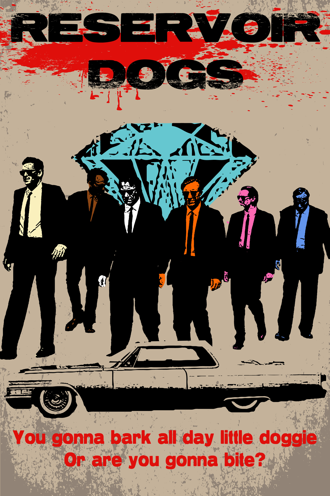

Tarantino was born on March 27, 1963, in Knoxville, Tennessee, the only child of Connie McHugh and actor Tony Tarantino, who left the family before his son's birth. He was named in part for Quint Asper, Burt Reynolds' character in the CBS series Gunsmoke.
Curtis Zastoupil (husband of Tarantino´s mother) encouraged Tarantino's love of movies, and accompanied him to numerous film screenings. Tarantino's mother allowed him to see movies with adult content, such as Carnal Knowledge (1971) and Deliverance (1972).
Adolescence
At 14 years old, Tarantino wrote one of his earliest works, a screenplay called Captain Peachfuzz and the Anchovy Bandit, based on Hal Needham's 1977 film Smokey and the Bandit starring Burt Reynolds.
At age 15, Tarantino dropped out of Narbonne High School in Harbor City, Los Angeles. He then worked as an usher at an adult movie theater in Torrance, called the Pussycat Theater.
Later, Tarantino attended acting classes at the James Best Theatre Company, where he met several of his eventual collaborators.While at James Best, Tarantino also met Craig Hamann, with whom he would collaborate to produce his first film in 1987.
Breackthrough
Tarantino received his first paid writing assignment in the early 1990s when Robert Kurtzman hired him to write the script for From Dusk till Dawn.
In January 1992, Tarantino's neo-noir crime thriller Reservoir Dogs—which he wrote, directed, and acted in as Mr. Brown—was screened at the Sundance Film Festival. It was an immediate hit, with the film receiving a positive response from critics.
The rest is known history..
His Movies
1992: Reservoirs Dog

Reservoir dogs movie poster.
Reservoir Dogs is a 1992 American crime film written and directed by Quentin Tarantino in his feature-length debut.
It incorporates many motifs that have become Tarantino's hallmarks: violent crime, pop culture references, profanity, and nonlinear storytelling.
The film is regarded as a classic of independent film and a cult film, and was named "Greatest Independent Film of all Time" by Empire.
Pulp Fiction is an American neo-noir black comedy crime film written and directed by Quentin Tarantino, who conceived it with Roger Avary.
Starring John Travolta, Samuel L. Jackson, Bruce Willis, Tim Roth, Ving Rhames, and Uma Thurman, it tells several stories of criminal Los Angeles.
The title refers to the pulp magazines and hardboiled crime novels popular during the mid-20th century, known for their graphic violence and punchy dialogue.
Jackie Brown is an American crime film starring Pam Grier in the title role. The film is an adaptation of Elmore Leonard's 1992 novel Rum Punch.
It is the only feature-length film that Tarantino has adapted from a previous work.
The film pays homage to 1970s blaxploitation films, particularly the films Coffy (1973) and Foxy Brown (1974), both of which also starred Grier in the title roles.
Kill Bill is an American martial arts film. It stars Uma Thurman as the Bride, who swears revenge on a team of assassins (Lucy Liu, Michael Madsen, Daryl Hannah, and Vivica A. Fox) and their leader, Bill (David Carradine), after they try to kill her and her unborn child.
Tarantino conceived Kill Bill as an homage to grindhouse cinema, including martial arts films, samurai cinema, blaxploitation, and spaghetti Westerns.
Death Proof is a 2007 American exploitation slasher film. It stars Kurt Russell as a stuntman who murders young women in staged car accidents using his "death-proof" stunt car.
The film pays homage to the slasher, exploitation and muscle car films of the 1970s.
Death Proof uses various unconventional techniques to make the film appear more like those that were shown in grindhouse theaters in the 1970s. Throughout the feature, the film was intentionally damaged to make it look like many of the exploitation films of the 1970s which were generally shipped around from theater to theater and usually ended up in bad shape.
Inglourious Basterds is a 2009 war film. The film tells an alternate history story of two plots to assassinate Nazi Germany's leadership, one planned by Laurent, a young French Jewish cinema proprietor, and the other by a team of Jewish American soldiers led by First Lieutenant Aldo Raine.
Christoph Waltz co-stars as Hans Landa, an SS colonel in charge of tracking down Raine's group.
The title was inspired by Italian director Enzo G. Castellari's macaroni combat film The Inglorious Bastards (1978), though Tarantino's film is not a remake of it.
Django Unchained is an American revisionist Western film, starring Jamie Foxx, Christoph Waltz, Leonardo DiCaprio, Kerry Washington, and Samuel L. Jackson.
Set in the Old West and Antebellum South, it is a highly-stylized, heavily-revisionist tribute to Spaghetti Westerns, in particular the 1966 Italian film Django by Sergio Corbucci, whose star Franco Nero has a cameo appearance.
The Hateful Eight (sometimes marketed as The H8ful Eight) is an American Revisionist Western thriller film. It stars Samuel L. Jackson, Kurt Russell, Jennifer Jason Leigh, Walton Goggins, Demián Bichir, Tim Roth, Michael Madsen, and Bruce Dern as eight strangers who seek refuge from a blizzard in a stagecoach stopover some time after the American Civil War.
Tarantino announced The Hateful Eight in November 2013. He conceived it as a novel and sequel to his previous film Django Unchained (2012) before deciding to make it a standalone film.
Once Upon a Time in Hollywood is a comedy-drama film. It features a large ensemble cast led by Leonardo DiCaprio, Brad Pitt, and Margot Robbie.
Set in 1969 Los Angeles, the film follows a fading character actor and his stunt double as they navigate the rapidly changing film industry, with the looming threat of the Tate-LaBianca Murders hanging overhead.
It features "multiple storylines in a modern fairy tale tribute to the final moments of Hollywood's golden age."
"The path of the righteous man is beset on all sides by the inequities of the selfish and the tyranny of evil men."
-Ezekiel (Samuel L. Jackson), Pulp Fiction
"Are you gonna bark all day, li’l doggie, or are you gonna bite?."
-Mr. Blonde (Michael Madsen), Reservoir Dogs
"Sitting in your chair, I would probably say the same thing. And nine nine nine point nine nine nine times out of a million you would be correct. But in the pages of history, every once in a Zwhile, fate reaches out and extends its hand. What shall the history books read?."